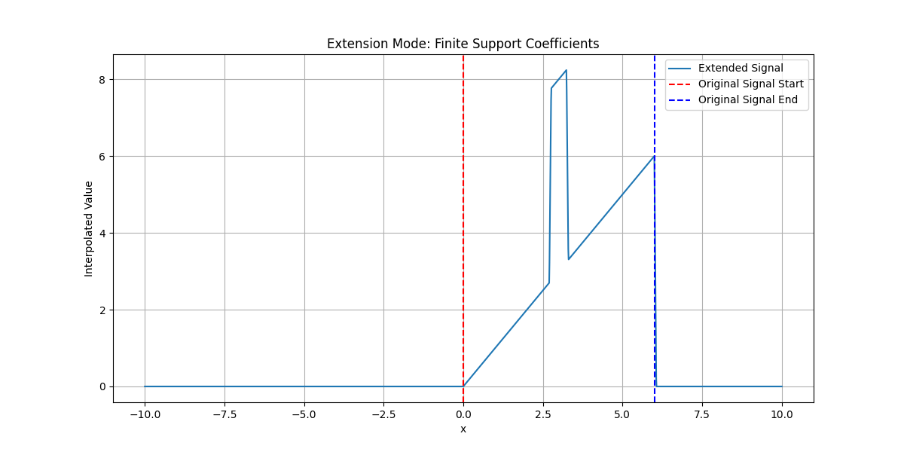

Displaying signal extension modes#
This example shows current extension modes finite support coefficients and narrow mirroring.
Imports#
Import the necessary libraries and utility functions.
import numpy as np
import matplotlib.pyplot as plt
from splineops.interpolate.tensorspline import TensorSpline
Function to create non-continuous signal#
Create a signal that is mostly linear but introduces a “bump” at an arbitrary location.
Function to plot extension modes for signal#
Define a helper function to plot extension modes using the non-continuous function.
def plot_extension_modes_for_bump_function(mode_name, x_values, title):
plt.figure(figsize=(12, 6))
# Create the signal with a bump
data = create_signal_with_bump(x_values)
# Create TensorSpline instance
tensor_spline = TensorSpline(
data=data, coordinates=(x_values,), bases="linear", modes=mode_name
)
# Define the extended evaluation grid (from -10 to 10)
eval_x_values = np.linspace(-10, 10, 2000)
eval_coords = (eval_x_values,)
# Evaluate the tensor spline
extended_data = tensor_spline.eval(coordinates=eval_coords)
# Plot the results
plt.plot(eval_x_values, extended_data, label="Extended Signal")
# Add vertical lines at the boundaries of the original signal
plt.axvline(
x=x_values[0], color="red", linestyle="--", label="Original Signal Start"
)
plt.axvline(
x=x_values[-1], color="blue", linestyle="--", label="Original Signal End"
)
plt.title(title)
plt.xlabel("x")
plt.ylabel("Interpolated Value")
plt.grid(True)
plt.legend()
plt.show()
Define x range#
x_values = np.linspace(0, 6, 101) # Use 101 points to ensure 0 (middle) is included
Plot for finite support coefficients#
Plot for narrow mirroring#

Total running time of the script: (0 minutes 0.170 seconds)